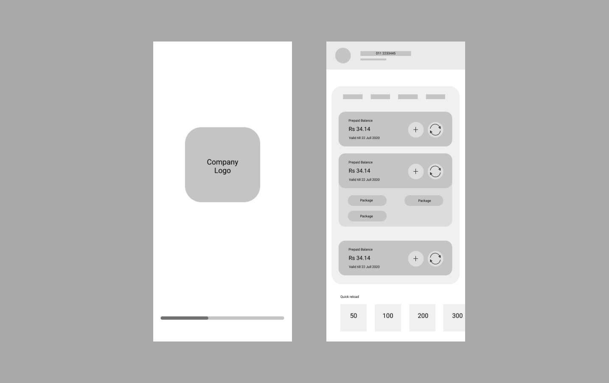
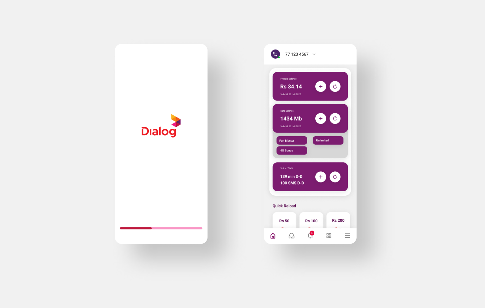
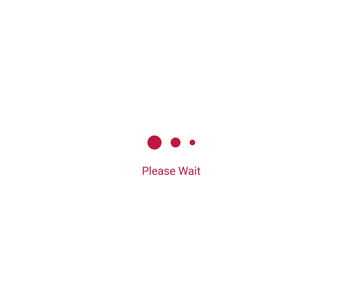
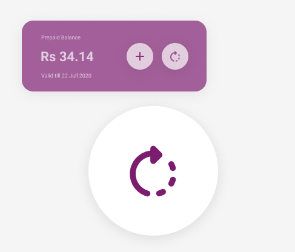
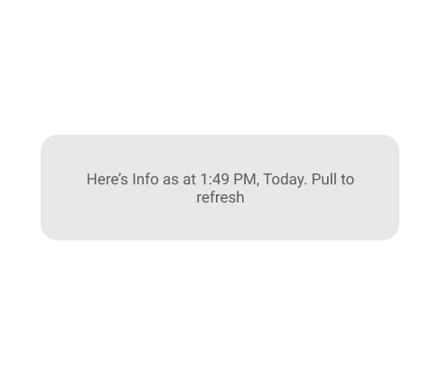
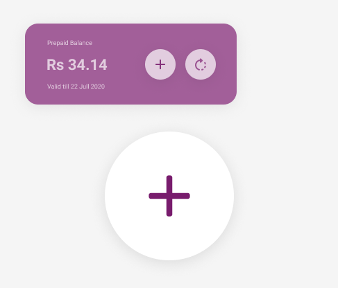

Dialog is a well reputed mobile telecommunication partner & ISP in Sri Lanka with a customer base of 13.8 million users. The main customer service mobile application “MyDialog” application is being criticized by dialog customers due to its user experience issues mainly due to its loading times and over complicated UI.
According to Google Playstore reviews the second highest number of star ratings is for only one-star reviews. These are several one-star reviews on Google Playstore. All these reviews have more than 100 likes.
“The app is damn slow. I should refresh the app at least 3 times to get the actual amount of data that is left in my router.” - 198 Likes
“The app is very slow and gets stuck everywhere. Please give a performance upgrade to the app. I have good network connectivity so it’s not a problem with the network, but actually the problem in app performance itself.” - 404 Likes
“The app is extremely slow. Literally takes 5 minutes to load from one thing to the other. Ex: If I had to reload the per day tv account, by the time I get to the payment options and payment processes, the show I was watching is over. Such a waste of time using the app.” - 674 Likes
“First of all, you say this app was made using customer suggestions??? All we asked was for 4G coverage for everywhere. The new ui is a total disaster, it's so frustrating to use the app. The app takes ages to load data.” - 180 Likes
“This application lags as hell. This is the worst application ever installed. Old My Dialog app was gold. It takes more than 2 or 3 minutes to load the application and its data.” - 908 Likes
“What the hell is wrong with these ----- people at Dialog. Simply trying to make a payment and I have to go through a roller coaster.” - 441 Likes
All these reviews are added in the timeframe of June 2021 – August 2021.
According to the questionnaire circulated among 20 participants, majority of users uses this application to view credit & data balance, reload, activate data packages, and bill payments. Yet the mobile application does not prioritize these features.
Once the application loads the main screen user’s attention divides between the multi-colored advertisement cards with tightly packed text and the bright purple card with user credit balance.
To activate a data package user, must scroll past 6 rows of cards containing other services provided by the company which are not used by most users.
Visual representation of the mobile application loading resembles a mobile app screen having slow network or network issues.
The mobile application tells users to pull down to refresh credit balances. Once pull down instead of balance refresh it reloads the page then refresh the credit or data balance.
George
Occupation : Lawyer
Residency : Colombo
Family : Married w Children
Goals
Easily pay his mobile phone bills
Frustrations
It takes too much time to load the app let alone pay the bill.
Bill payment option is way too complicated to find
Say
"I want to pay my mobile bill quickly or they will disconnect me"
"I don’t know what my credit level is or when it expires."
Think
"Does it take the same time to activate a data pack from dialing a code"
"Why can’t I use a bank mobile app to pay my mobile bill"
Does
Pays mobile bill from the app
Buys a recharge card to add credit
Go to a shop and reload credit
Dial a code and convert credit into data
Uses the mobile app
Feels
Frustrated that he must scroll and click multiple components to activate a data package.
Frustrated that the mobile application takes long time to load.
The mobile application uses around 10-15 seconds to load application from a connection with speed over 50mbps. (Hence, we can rule out network speed as the cause).
Even after the mobile application loads it takes additional 5-10 seconds to load the users balance credit and data.
The visual representation of the mobile application loading confuses the users whether if they have a network issue or if the application has some technical issue.
The mobile application is overly complicated with lots of options. Users have to click through multiple components and menus to complete a simple task.
The goal is to find a solution for above problems with minimal inconvenience to current mobile application users.
Improving the UI for the users to cooperate with loading times & prioritizing specific features.
Developing a separate light weight application with mostly used features only.
Improving the loading delays from application backend.
Creating home screen widget to quick credit top up.
The following solution is created by improving the UI for the users to cooperate with loading times & prioritizing specific features.
Adding a progress indicator to mobile application loading. This will give uses visual indication of application loading progress.
Removing the top -advertisement cards and using mobile notifications to advertise users of new packages and news. That way users can direct their attention to the credit/Data balance card and mobile notification advertisements get users instant attention without effecting the purpose of the application.
Adding a separate refresh button to the credit/data balance card allowing to refresh only the balance data. This shows users that the balance needs to be refreshed to see the latest version.
Bringing the data package card to the top allowing users to easily select the data packages without scrolling past several rows of components.


App loading indication new

App loading indication old
The progress bar keeps the user engaged mentally while the mobile application loads because it shows the application loading progress.
Unlikely the old loading indication is most appropriate for component loading or network delays.

Refresh data indication new

Refresh Data indication old
Providing a sperate icon button for refresh would instanly signal users that the data being shown is not current and also by Providing
functionality to refresh the data of a single card would prefent loading of the entire screen again and take up users time.

Refresh data indication new
A simple add button for each category of balance cards eliminates the instance of users having to scroll long way down to activate new packages or reload
Sending Mobile notifications once data or credit level is depleted.
The current system sends a SMS once their data package or credit is over. But these SMS are unreliable most of the time these messages won’t receive until sometime after the package is over. Mobile notifications instantly grab user’s attention since they are more used to notifications than SMS.